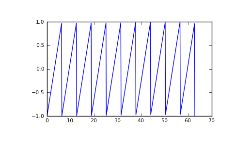

scipy.signal.sawtooth¶
- scipy.signal.sawtooth(t, width=1)¶
Return a periodic sawtooth waveform.
The sawtooth waveform has a period 2*pi, rises from -1 to 1 on the interval 0 to width*2*pi and drops from 1 to -1 on the interval width*2*pi to 2*pi. width must be in the interval [0,1].
Parameters : t : array_like
Time.
width : float, optional
Width of the waveform. Default is 1.
Returns : y : ndarray
Output array containing the sawtooth waveform.
Examples
>>> import matplotlib.pyplot as plt >>> x = np.linspace(0, 20*np.pi, 500) >>> plt.plot(x, sp.signal.sawtooth(x))
